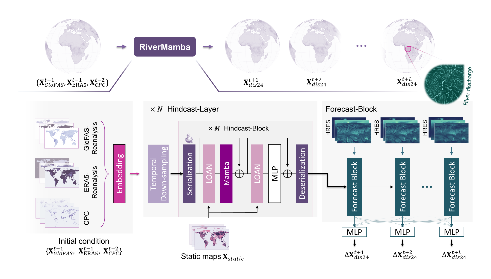
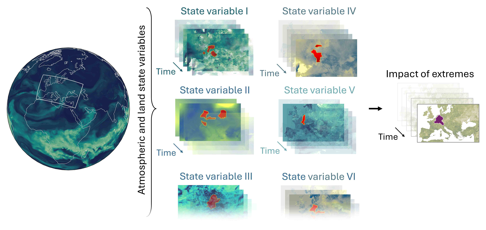
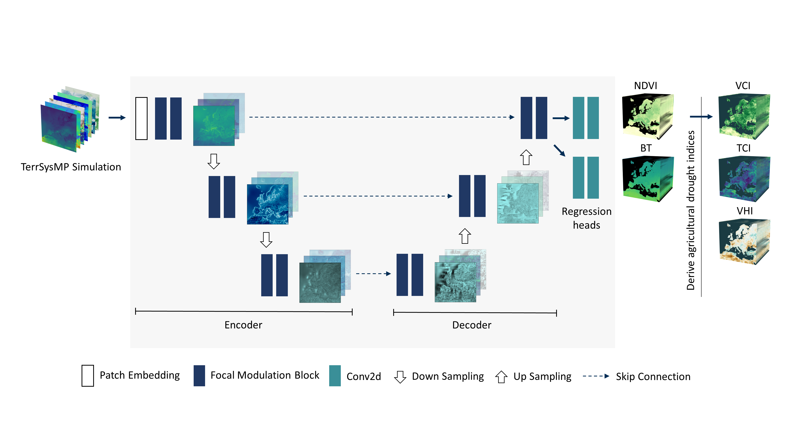
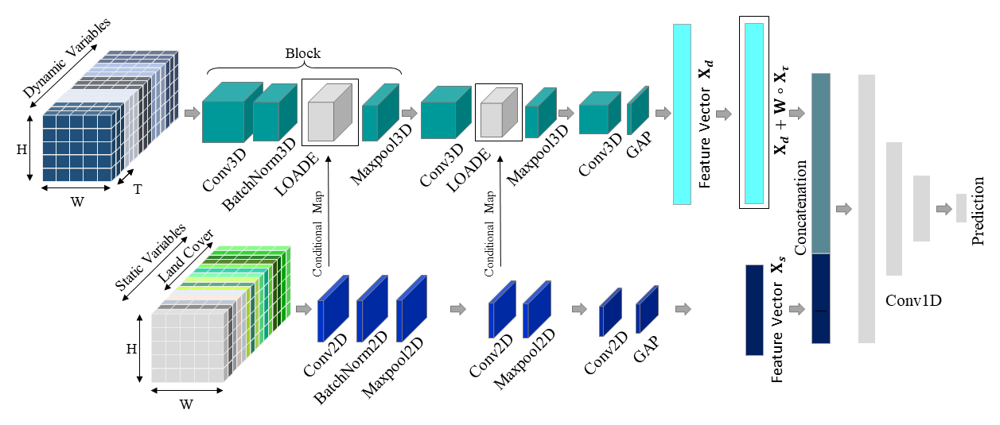
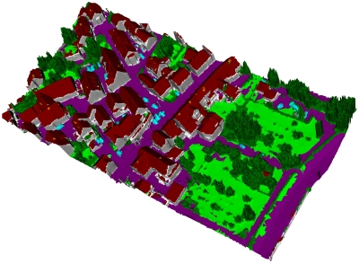
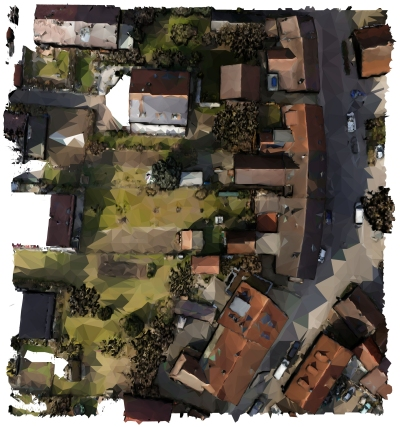

RiverMamba: A State Space Model for Global River Discharge and Flood Forecasting.
ArXiv preprint, 2025.
Shams Eddin, M. H., Zhang, Y., Kollet, S. and Gall, J.
[PDF]
Intro
I am interested in deep learning for climate science and remote sensing. During my studies, I specialized in computer vision and understanding of 3D scenes. Currently, I am a PhD student in computer science at the University of Bonn, Germany under a supervision of Prof. Dr. Juergen Gall. I received my Master's degree in geomatics engineering (GEOENGINE) from the University of Stuttgart in 2019, and prior to that my Bachelor's degree in geodesy and topographic engineering from the University of Aleppo in 2015.
Publications

 Identifying Spatio-Temporal Drivers of Extreme Events. 38th Conference on Neural Information Processing Systems (NeurIPS 2024), 2024.
Shams Eddin, M. H. and Gall, J.
[PDF] [GitHub] [Website] [Video] [Data]
 Focal-TSMP: deep learning for vegetation health prediction and agricultural drought assessment from a regional climate simulation. Geosci. Model Dev., 17, 2987–3023, https://doi.org/10.5194/gmd-17-2987-2024, 2024.
Shams Eddin, M. H. and Gall, J.
[PDF] [GitHub] [Website] [Video] [Data]
 Location-aware Adaptive Normalization: A Deep Learning Approach For Wildfire Danger Forecasting. In IEEE Transactions on Geoscience and Remote Sensing, vol. 61, pp. 1-18, 2023, Art no. 4703018, doi: 10.1109/TGRS.2023.3285401. IEEE
Shams Eddin, M. H., Roscher, R. and Gall, J.
[PDF] [GitHub]
 On The Association Of Lidar Point Clouds And Textured Meshes For Multi-ModaL Semantic Segmentation. ISPRS Ann. Photogramm. Remote Sens. Spatial Inf. Sci., V-2-2020, 509–516, https://doi.org/10.5194/isprs-annals-V-2-2020-509-2020, 2020.
Laupheimer, D., Shams Eddin, M. H. and Haala, N.
[PDF] [GitHub]
 The Importance of Radiometric Feature Quality for Semantic Mesh Segmentation. DGPF 40. Wissenschaftlich-Technische Jahrestagung der DGPF in Stuttgart – Publikationen der DGPF, Band 29, 2020, pp. 205-218.
Laupheimer, D., Shams Eddin, M. H. and Haala, N.
[PDF] [GitHub]
Research Projects

RAINA - Federal Ministry of Research, Technology and Space
The RAINA project aims to develop a foundational model for weather forecasting. The prototype application aims for a precise short-term forecast of temperature, wind, and precipitation, intended to surpass operational models (2024-2025).
DETECT - DFG Collaborative Research Centre
Deep generative neural networks for detecting anomalous events in the water cycle (2022-2025).
{kind=link}
Semantic Mesh Segmentation using PointNet++
A Master Thesis at the Institute of Photogrammetry (Ifp), University of Stuttgart (2019). The aim of this project was to explore a semantic segmentation of meshes in an outdoor urban scenario and to make use of PointNet/PointNet++, which are point based deep neural networks applicable to meshes. The implemented pipeline segments meshes semantically including pre-processing, incorporation of LiDAR point cloud with mesh, training and evaluation. The used dataset is a 2.5 D textured mesh covering an urban area of the village Hessigheim in Germany.
{kind=link}
Using GIS in Digitization of Cadastral Plans
A Diploma Thesis at the University of Aleppo (2015). We tackled the problem of digitizing old cadastral plans aiming to improve resource efficiency. We established a pipeline for georeferencing and preprocessing of scanned paper maps in order to use them in a Real-Estate-Agencies database.
Industrial Projects
{kind=link}
Precise Localization and Modelling of Railway Sleepers
Given an initial point on the first railway sleeper, the novel method determines the positions and orientations of the following sleepers and their relevant components. It is mainly based on linear algebra. The data are point clouds derived from mobile laser scanning. I developed the algorithm at intermetric GmbH in the context of the multidisciplinary project Rendsburg High Bridge (2022).
{kind=link}
Semantic Segmentation of Point Cloud Applied to Railway Scenes
This is an automated inspection of railway’ power line using 3D deep learning and mobile laser scanning. The dataset was collected by intermetric GmbH. It consists of 7 classes and covers a diverse range of railway scenes including tunnels (2021).
{kind=link}
Orthofoto Generation with kd-tree
This is a fast orthophoto generation from point cloud, implemented using OpenCV and Open3D libraries (2021).
{kind=link}
Captured 3D Data (As-Built) to the 3D Model (As-Planned)
The algorithm computes discrepancies between point cloud (as-built) and 3D CAD model (as-planned) for reliable assuring of correct geometry and change detection in construction sites. I developed the algorithm at intermetric GmbH in the context of Stuttgart 21 project (2021).
{kind=link}
Evaluation of Railway Station Platforms
This is a heuristic-based algorithm for automated geometric quality assurance of railway platforms (U-Bahn München). The invented method enables the extraction of railway trajectory and its distances to railway platforms. Algorithm developed at intermetric GmbH (2021).
{kind=link}
CNN-based Algorithm for Automatic Cracks Detection in Tunnels
This is an implementation of deep convolutional neural networks for the inspection of construction conditions in tunnels. The input data are orthophotos with submillimeter resolution. The dataset was collected by intermetric GmbH (2020).